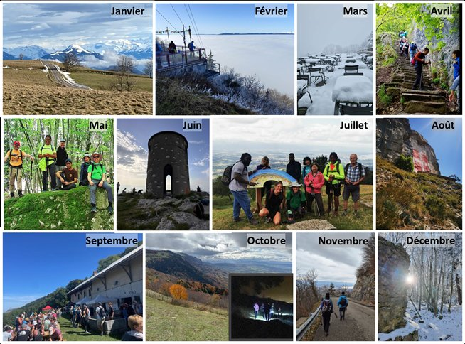
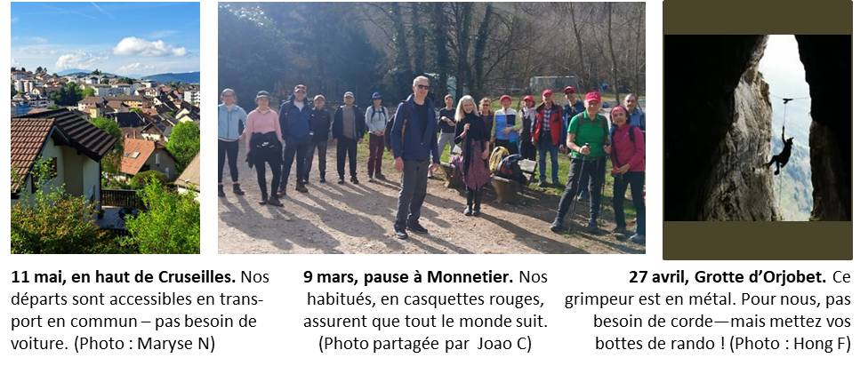
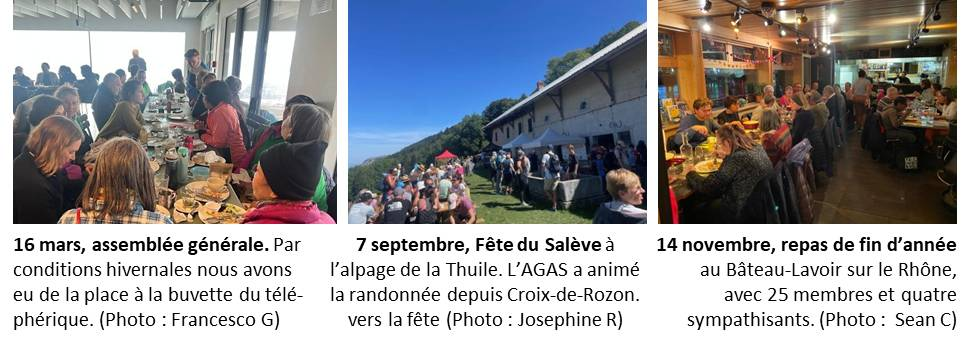
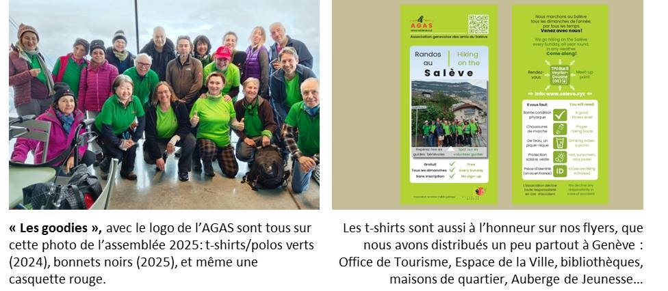
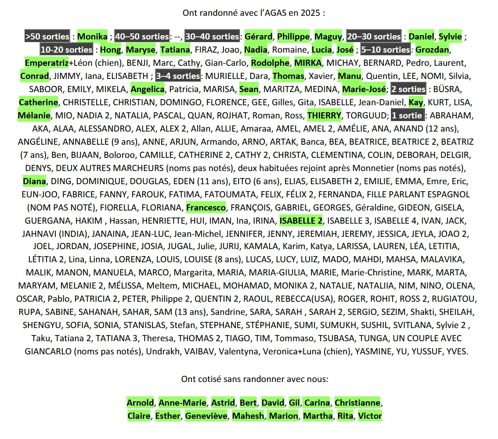

Association genevoise des amis du Salève
A G A S
Rapport annuel 2025
2025 : le Salève, vu par nos marcheurs

Janvier : le Môle, depuis la crête du Salève (Philippe E) ; février : la terrasse du temple bouddhiste (Daniel P) ; mars : à la gare haute du téléphérique (Conrad B) ; avril : sur le sentier du Pas de l'Echelle (Cathy T) ; mai : le bloc erratique ‘La Plate' en haut de Chotard (Maryse N) ; juin : la tour Bastian au Grand Piton (Bernard R) ; juillet : le groupe, à la fête de la Thuile (un passant inconnu) ; août : le drapeau savoyard depuis la Corraterie (Hong F) ; septembre : fête du Salève (Josephine R) ; octobre : couleurs automnales (Florence A) , marche nocturne (Monika Z) ; novembre : au retour du chemin du Facteur (Tatiana K) ; décembre : soleil et givre sur le chemin du Funiculaire (José M).
Rapport rédigé par :
Monika Zweygarth (présidente)
Daniel Pfund (vice-président)
Randonnées

Sorties : En 2025, le rendez-vous fixe à Veyrier-Douane a de nouveau été maintenu chaque dimanche de l'année, soit 52 dimanches. Nous avons aussi organisé six sorties alternatives de dimanche depuis des endroits plus au sud du Salève, et deux sorties hors dimanche, soit 60 sorties au total.
Chemins parcourus : Nos randonnées ne dépassent pas la cotation T2 du Club Alpin Suisse (« randonnée en montagne »). Un plan des chemins que nous avons empruntés, numérotés par fréquence de nos passages, se trouve dans l'Annexe 1 de ce rapport.
-
Rendez-vous fixe : Depuis Veyrier-Douane nous faisons normalement environ 800-900 mètres de dénivelé positif et une distance de 7 à 25
kilomètres selon l'itinéraire. Souvent nous montons par le Pas de l'Echelle, la Grande Gorge ou le chemin d'Orjobet pour faire une traversée
(ou non) par la crête ou la Corraterie, avant de descendre à Veyrier-Douane ou à Croix-de-Rozon. Plus rarement nous empruntons d'autres
sentiers comme celui du Bois-Mouton, du Funiculaire, ou de la Joie par exemple.
-
Rendez-vous alternatifs : En partant aussi depuis d'autres endroits accessibles en transport en commun, nous avons pu explorer le sud du
Salève : la Tour Bastian, la Ferme de la Thuile, l'Abbaye du Pomier, le col du Plan, le chalet des Convers et la montée depuis Cruseilles.
Etant plutôt longues, et loin du téléphérique, ces sorties supplémentaires ont été annoncées seulement à nos marcheurs déjà dans notre groupe
WhatsApp ou dans nos contacts e-mail.
-
Sorties hors dimanches : Nous avons marché depuis les Ponts de la Caille à Croix-de-Rozon en passant par le haut du Salève le 11 septembre
(Jeûne Genevois), et un groupe d'habitués s'est retrouvé pour une rando nocturne sur la crête le vendredi 11 octobre.
Participants : En moyenne, 12 personnes sont venues aux rendez-vous (minimum 1—le 16 novembre, très pluvieux— et maximum 26). Nous notons les prénoms au départ ; vous les retrouverez dans l'Annexe 2 ). Au total il y a eu 747 présences notées (2024 : 769), dont 201 (2024 : 210) étaient des premières sorties avec l'AGAS et sept étaient des enfants âgées entre 6 et 13 ans. La légère baisse pourrait être liée en partie à la fermeture du téléphérique dès le 3 novembre pour une grande inspection.
Reconduisant les chiffres des rapports annuels précédents, depuis mai 1996 et jusqu'à fin 2025, il y a eu 30'031 participants (en comptant chaque sortie de chaque personne), et 8'359 personnes différentes sont venues marcher avec l'AGAS.
Les randos ont été animées par Daniel, Monika, Gérard, Philippe, Maryse, Cathy et Rodolphe, avec l'aide occasionnelle de José, Maguy, Sylvie, Hong et d'autres habitués. Nous les remercions pour leur engagement.
Vie associative

Assemblée générale : Elle s'est tenue le 16 mars à la gare haute du téléphérique. Etaient présents, 20 membres votants sur un total de 45 membres cotisants. Le procès-verbal est disponible ici.
Utilité publique : Comme l'AGAS vise un cercle ouvert de bénéficiaires, n'a pas de but lucratif ni d'entraide mutuelle, et est gérée par des bénévoles, elle satisfait les critères pour être reconnue d'utilité publique. L'assemblée générale 2025 a approuvé les modifications de statuts requises, et nous avons soumis à l'autorité cantonale une demande d'exonération fiscale. Cette dernière nous a été accordée. L'AGAS est maintenant reconnue comme association d'utilité publique pour cinq ans (2024-2028 compris). Cela veut dire, entre autres, que les dons fait à l'AGAS (mais pas les cotisations) peuvent être déduits du revenu imposable du donneur.
Subvention : Le Service des sports de la Ville de Genève a approuvé notre demande pour une subvention de CHF 1000. Nous remercions la Ville de Genève pour son soutien. Merci aussi à nos membres cotisants : ils donnent à l'AGAS ses propres ressources, condition pour tout organisme qui souhaite bénéficier d'un subside de la Ville.
Finances : Les finances de l'AGAS sont modestes mais saines. Grâce aux cotisations de nos membres, ainsi qu'à la subvention du Service des sports de la Ville de Genève, nous avons pu mener à bien les activités décrites dans ce rapport. Le rapport financier a été préparé séparément.
Partenariats : Un lien vers l'AGAS se trouve sur les pages suivantes:
-
Syndicat mixte du Salève (SMS) -- «
Associations,_partenaires » (en fin de page) : En 2025, Monika a participé à deux réunions du Comité de Pilotage de révision
du Schéma Directeur de la Randonnée. Le SMS gère un réseau de 325 kilomètres de chemins de randonnée dans la région.
Vous pouvez leur signaler toute observation, de préférence en utilisant l'application
Suricate pour téléphones mobiles.
-
Genève Rando -- « Liens vers nos principaux contacts
-- Randonnées ». C'est l'organisation cantonale de randonnée qui balise les chemins à Genève. En 2025,
le Sentier du Salève s'est vu ajouté à leurs
itinéraires décrits en ligne. Plusieurs de nos membres et sympathisants sont actifs chez GE-Rando.
-
Oxygène 74 -- «Divers liens utiles ».
Basé à Collonges-sous-Salève, France, ce club de randonnée est lié à l'AGAS de longue date. Plusieurs de leurs membres
viennent aussi randonner avec nous et/ou sont membres de l'AGAS.
A ne pas oublier, l'Auberge du Mont-Blanc, située à cinq minutes de la station haute du téléphérique. Nos randonneurs s'y retrouvent volontiers pour un café avant de redescendre à Veyrier. Avec leur accueil chaleureux, Connie et Jean-Louis nous consolent de la disparition de la buvette de Gilles et Coco.

« Goodies » : En 2025, nous avons offert à nos membres un bonnet d'hiver noir avec le logo de l'AGAS, bien apprécié lors des sorties froides. Pour 2026, nous avons prévu une casquette, à choix entre noire ou kaki. Nous recherchons activement de nouvelles idées de goodies pour les années à venir, alors n'hésitez pas à nous faire des propositions.
Site web : Le nombre de visiteurs sur notre site web (www.saleve.xyz) a augmenté de 19% en 2025 pour atteindre 1449 vues. La page principale est la plus visitée, suivie de la page en anglais. En effet, 48% des visiteurs ont leur langue par défaut en anglais, suivi de 39% en français, et 3% en allemand. 67% des visiteurs proviennent de Suisse, 14% de France et 7% des Etats-Unis! 49% des visiteurs consultent le site sur un smartphone (30% iOS, 19% Android), ce qui confirme l'utilité de l'adaptabilité du site aux petits écrans et tablettes.
Groupe WhatsApp : Nous avons un groupe WhatsApp ouvert à tous les randonneurs (membres et non-membres). Il est géré par Maryse et Daniel; n'hésitez pas à les contacter si vous voulez être ajouté au groupe. C'est un groupe dédié au Salève, donc merci de garder les discussions en rapport avec le Salève. Les membres qui participent le dimanche y postent des photos pour le bonheur des randonneurs absents ce jour-là. On discute aussi de propositions hors randonnées habituelles du dimanche, comme des randonnées spéciales qui ne partent pas de Veyrier ou des sorties repas. Il y a actuellement 111 personnes dans le groupe, donc encore une fois, merci de garder les discussions en rapport avec le Salève et de ne pas poster simplement des emojis (il y a des boutons “réagir” pour ça).
Perspectives
Tout en étant une association de randonnée un peu atypique, l'AGAS a ses points forts. Nos randos sont extrêmement accessibles: pas besoin d'inscription, ni d'argent, ni de voiture, ni de se lever tôt, ni même de parler français -- et on découvre des endroits magnifiques tout près de Genève. De plus, on rencontre des gens intéressants provenant d'un peu partout. Le dimanche, sur le Salève, on vient se ressourcer pour la semaine.
Il y a aussi des défis. Le rendez-vous fixe est impossible à annuler, il faut donc quelqu'un à l'accueil tous les dimanches. Et même si nous restons sur les chemins balisés, au Salève la prudence s'impose. C'est une responsabilité pour les initiés que de garder un oeil sur les autres. Tous nos participants ne sont pas des adeptes de montagne... mais tant mieux s'ils découvrent le Salève avec nous, avant de s'y aventurer tout seuls.
Certains disent qu'il faut être un peu fou pour monter toujours sur la même montagne. Et pourtant: parmi les presque 300 participants de cette année, une bonne vingtaine sont revenus régulièrement, dont quelques nouveaux qui ont nous rejoint cette année. En effet, c'est la compagnie qui compte. Un grand merci à tous nos fidèles : c'est vous qui faites la force de l'AGAS.
Annexe 1:
Chemins parcourus
Numérotés de 1 à 20, par nombre de nos passages
Remarques :
- Plusieurs chemins sont enchaînés pour un itinéraire (montée, traversée, descente).
- Plusieurs itinéraires peuvent être proposés le même jour.
- Les chemins en pointillé sur le plan ci-dessous sont sur l'autre versant du Salève.

|

Fréquence
(Nombre de fois pris)
|
Nombre de marcheurs
(comptant chaque passage
d'un marcheur à chaque fois)
|
| # |
Chemin |
Montée
▲
| Descente
▼
| Total
| Montée
▲
| Descente
▼
| Total
|
| 1 |
Pas de l'Echelle |
45 |
45 |
90 |
459 |
271 |
731 |
| 2 |
Crête |
|
|
35 |
|
|
208 |
|
Téléphérique |
5 |
35 |
40 |
23 |
162 |
185 |
| 3 |
Facteur |
|
32 |
32 |
|
180 |
180 |
| 4 |
Orjobet |
7 |
2 |
9 |
58 |
10 |
68 |
| 5 |
Grande Gorge |
7 |
|
7 |
59 |
|
59 |
| 6 |
Vovray-Traversière |
4 |
4 |
8 |
32 |
21 |
53 |
| 7 |
Grand Piton-La Thuile |
|
|
5 |
|
|
49 |
| 8 |
Croisette-Grand Piton |
|
|
5 |
|
|
44 |
| 9 |
Tour du Petit Salève |
|
|
5 |
|
|
40 |
| 10 |
Bois-Mouton |
4 |
|
4 |
34 |
|
34 |
| 11 |
Corraterie |
|
|
7 |
|
|
32 |
| 12 |
Chemin du Funiculaire |
3 |
|
3 |
26 |
|
26 |
| 13 |
Allumées |
|
5 |
5 |
|
20 |
20 |
| 14 |
Gr. Gaby-Pile-Croisette |
|
|
2 |
|
|
13 |
| 15 |
Plan-Grand Piton |
|
|
2 |
|
|
13 |
| 16 |
Montée depuis Cruseilles* |
2 |
|
2 |
13 |
|
13 |
| 17 |
Sentier de la Joie |
|
|
2 |
|
|
9 |
| 18 |
Beaumont-La Thuile |
1 |
|
1 |
8 |
|
8 |
| 19 |
Le Coin-Veyrier |
|
|
3 |
|
|
6 |
| 20 |
Châble-Chalet des Convers |
1 |
|
1 |
6 |
|
6 |
* Une fois de Cruseilles au Plan du Salève, et une fois depuis les Ponts de la Caille au chalet des Convers.
Annexe 2:
Participants
Nous notons les noms des participants au départ.
- NOMS EN MAJUSCULES : Premières sorties avec l'AGAS
- Noms encadrés : Membres cotisants de l'AGAS en 2025
